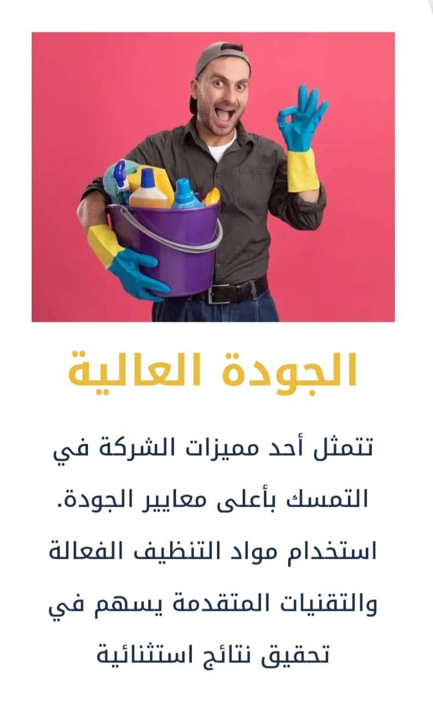
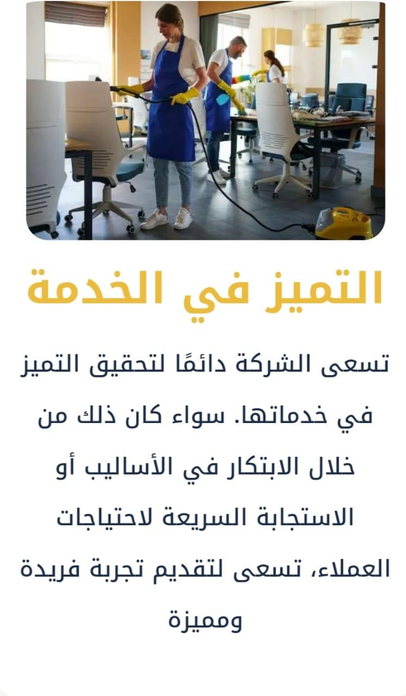
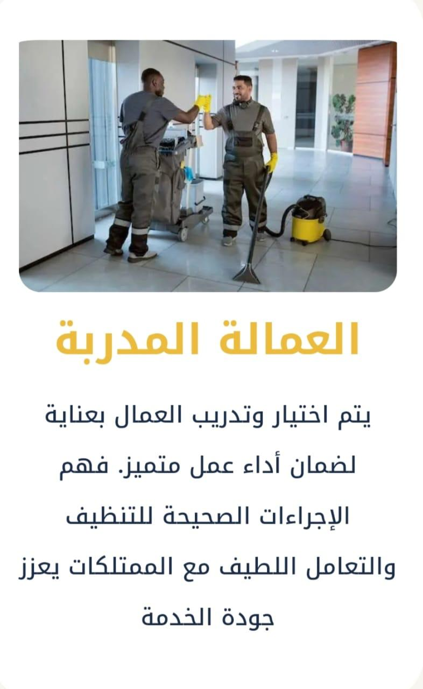
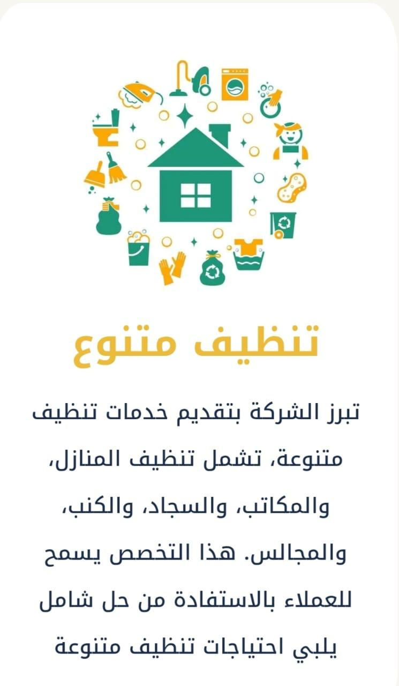
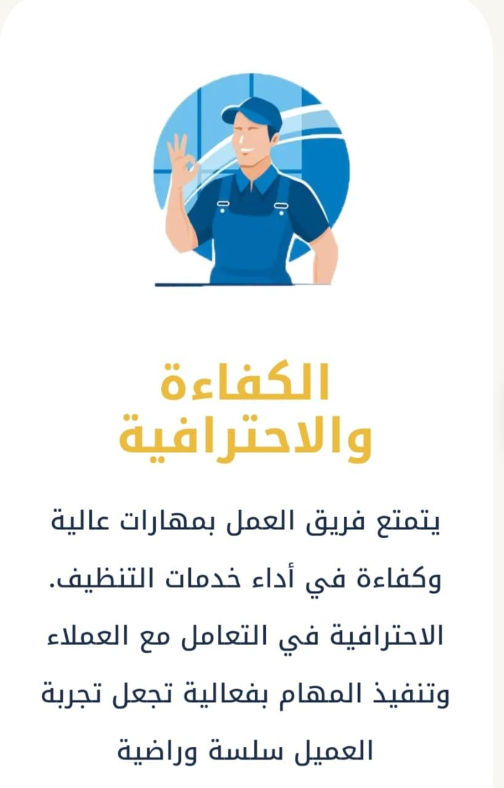
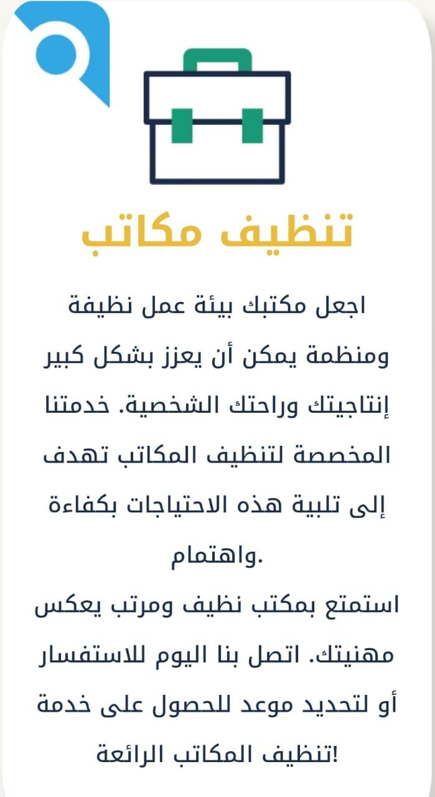
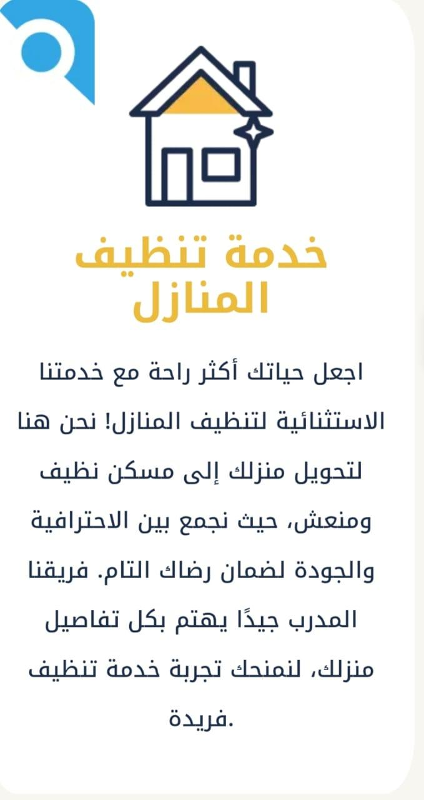
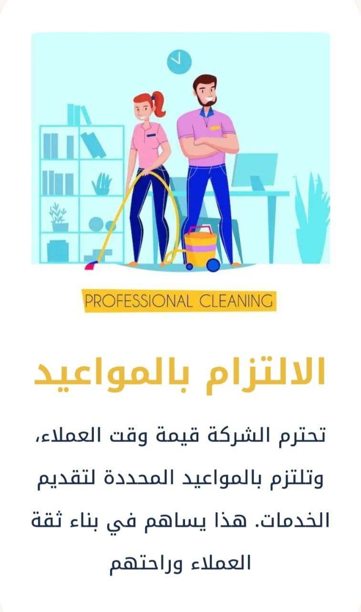

شركة بريق تقدم خدمات تنظيف عالية الجودة باحترافية. فريقنا المدرب يستخدم أحدث المعدات والمواد الصديقة للبيئة لضمان بيئة نظيفة وصحية. نركز على التفاصيل لتوفير رضا تام، مما يتيح لك الاستمتاع بمنزل نظيف ومريح دون عناء.








الخدمات
1. تنظيف الأماكن المختلفة :
- تنظيف المنازل، المكاتب، المجالس، الفلل، الشقق، والمدارس.
2. تنظيف الكنب والموكيت
- تنظيف السجاد والموكيت: شفط الأتربة باستخدام المكانس الكهربائية، وتنظيف البقع باستخدام مواد تنظيف خاصة.
- تنظيف الأرائك والكراسي: شفط الأتربة والبقع من الأسطح القماشية أو الجلدية باستخدام أدوات ومنتجات مخصصة.
3. تنظيف خزانات المياه
- تنظيف شامل: إزالة الأتربة والرواسب.
- تطهير وتعقيم: القضاء على البكتيريا والطحالب.
- صيانة دورية: تنظيف وتطهير كل ستة أشهر.
4. مكافحة الحشرات والقوارض
- مكافحة الحشرات: التخلص من الصراصير، النمل، البعوض، البراغيث، والبق.
- مكافحة القوارض: القضاء على الفئران والجرذان باستخدام أحدث الأساليب والمنتجات.
- مكافحة الحمام: إبعاد الحمام عن المباني والأسطح وتركيب أنظمة حماية فعالة.
5. تنظيف المكيفات والشبابيك
- تنظيف المكيفات: تنظيف وصيانة جميع أنواع المكيفات، مما يحسن من كفاءة التبريد ويطيل عمر الجهاز.
- تنظيف السبليت: إزالة الأتربة والبكتيريا من وحدات السبليت الداخلية والخارجية لضمان هواء نقي وصحي.
- تنظيف الشبابيك: تنظيف الزجاج والإطارات والمفاصل لضمان وضوح الرؤية ومنع تراكم الأتربة والأوساخ.
6. تنظيف المساجد
- تنظيف السجاد: إزالة الأتربة والبقع وتعطير السجاد ليبقى ناعمًا ونظيفًا.
- تنظيف الأرضيات: غسيل ومسح الأرضيات باستخدام أفضل مواد التنظيف لتعزيز النظافة.
- تنظيف دورات المياه: تعقيم وتنظيف دورات المياه لضمان النظافة والصحة العامة.
- تنظيف النوافذ: تنظيف وتلميع النوافذ لضمان دخول الضوء الطبيعي والحفاظ على الرؤية.
- تنظيف الأثاث والتجهيزات: تنظيف المقاعد، المكتبات، والمنابر لضمان بيئة نظيفة وآمنة.
7. عزل الخزانات
- الحماية من التلوث: يمنع العزل دخول الشوائب والأتربة والبكتيريا إلى داخل الخزان، مما يحافظ على نظافة المياه.
- منع التسرب: يساعد العزل في منع تسرب المياه من الخزان إلى الخارج، مما يحافظ على الكمية المخزنة من المياه ويقلل من الفاقد.
- حماية هيكل الخزان: يعمل العزل على حماية الهيكل الخارجي للخزان من التأثيرات البيئية مثل الرطوبة والأملاح، مما يطيل عمر الخزان.
- تقليل تكاليف الصيانة: يقلل العزل من حاجة الخزان للصيانة الدورية والإصلاحات الناتجة عن التلف أو التسريب.
8. تنظيف المدارس
- تنظيف وتعقيم الفصول الدراسية.
- تنظيف الممرات والمرافق العامة.
- تنظيف وتعقيم دورات المياه.
- تنظيف النوافذ والزجاج.
- تعقيم الأسطح والمعدات المدرسية.
9. جلي الرخام والجرانيت والموزاييك
- جلي وتلميع الرخام لإعادة البريق الطبيعي.
- معالجة الخدوش والشقوق في الرخام والجرانيت.
- تنظيف وتلميع الأرضيات والجدران المصنوعة من الموزاييك.
- استخدام مواد عالية الجودة وآمنة للبيئة.
- خدمات صيانة دورية للحفاظ على جمال الأسطح.
المناطق
حي المطار، حي الجامعيين، حي صبابة، حي النقرة، الشنان، موقق، والشملي، وجميع احياء حائل